Cambridge IGCSE Combined and Co-ordinated Sciences (Second Edition) | Pages 355–372
This chapter covers chemical reactions — how to distinguish physical from chemical changes, the factors that control how fast reactions occur, and the important class of reactions known as redox reactions. It is divided into three main sections:
This is a high-value exam chapter because rate of reaction questions appear almost every year, and redox concepts underpin much of chemistry including electrochemistry (Chapter C4). You must be able to interpret rate graphs, use collision theory to explain experimental observations, write half-equations, and apply the OIL RIG mnemonic for electron transfer.
The Chinese characters for "chemistry" literally mean "the study of change" (hua xue). Chemistry deals with how substances transform — but not all changes are the same.
Physical change: A change in the physical properties, state, or appearance of a substance that does not involve the formation of a new substance. Physical changes are usually easy to reverse.
Examples of physical changes:
Key features:
Chemical change: A change in which one or more new substances are formed. Chemical changes are usually difficult to reverse.
Examples of chemical changes:
Key features:
Energy in chemical changes: Chemical reactions can involve the transfer of heat and light. The combining of elements, such as magnesium and oxygen, to form new compounds is one of the central ideas in chemistry.
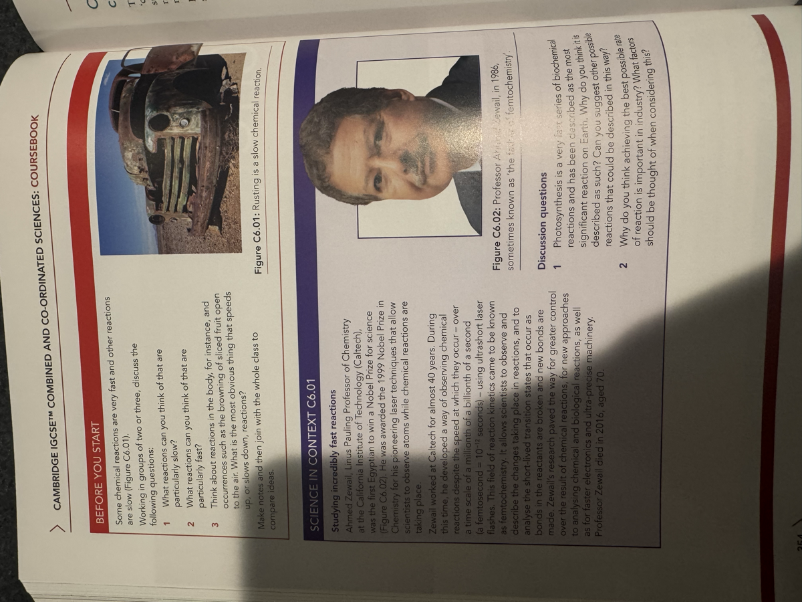
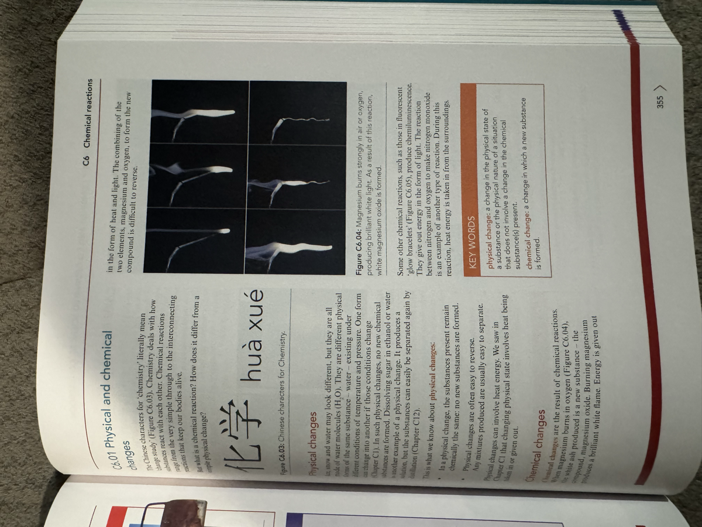
Reaction rate: A measure of how fast a reaction takes place. It tells us how quickly reactants are used up or how quickly products are formed.
Some reactions are very fast (explosions, fireworks) and others are very slow (rusting, geological weathering). Understanding what controls the speed of a reaction is essential for industry, biology, and everyday life.
Five factors that affect the rate of a reaction:
Catalyst: A substance that increases the rate of a chemical reaction but is itself unchanged at the end of the reaction. It is not used up.
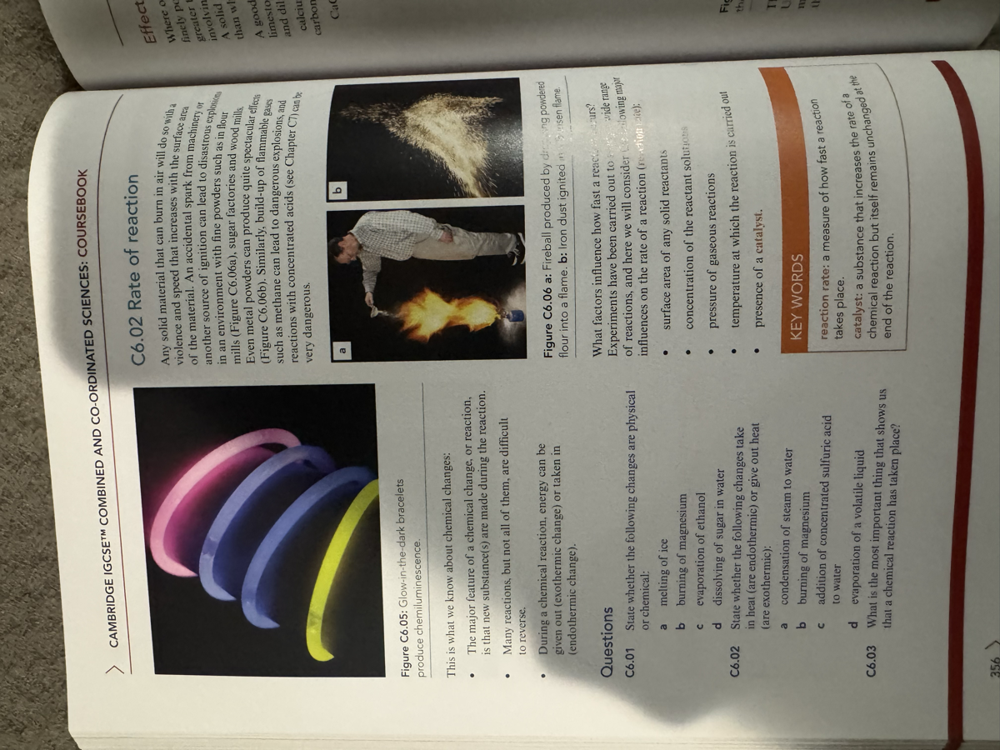
When one of the reactants is a solid, the more finely divided (smaller pieces) it is, the faster the reaction. This is because smaller pieces expose more surface for the other reactant to attack.
Classic experiment: Marble chips + hydrochloric acid
Graph interpretation:
Why? Smaller pieces have a larger total surface area. More acid particles can collide with the marble surface at the same time, so the reaction is faster.
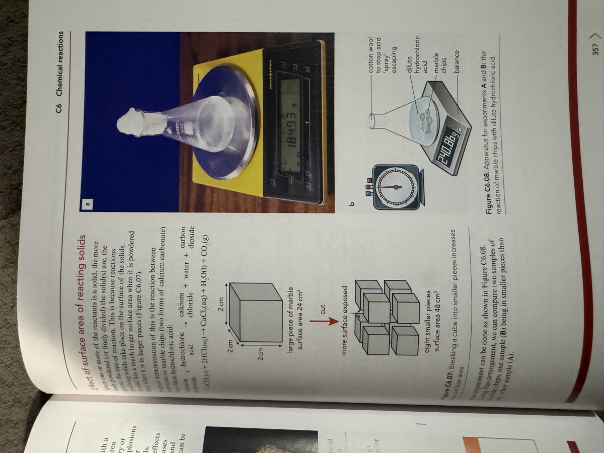
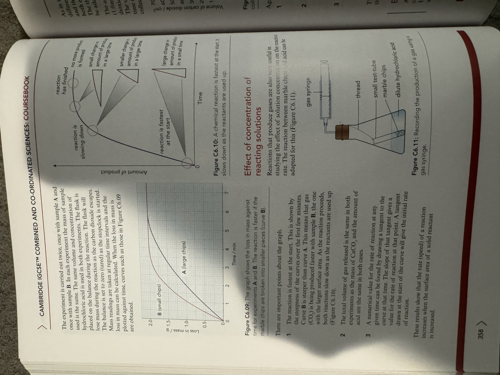
When you increase the concentration of a solution, the reaction rate increases.
Classic experiment: Marble chips + different concentrations of acid
Graph interpretation (volume of gas vs time):
Real-world example: In a petrol engine, fuel is compressed with air before ignition — increasing the pressure (and effectively the concentration of oxygen and fuel molecules) makes combustion faster and more powerful.
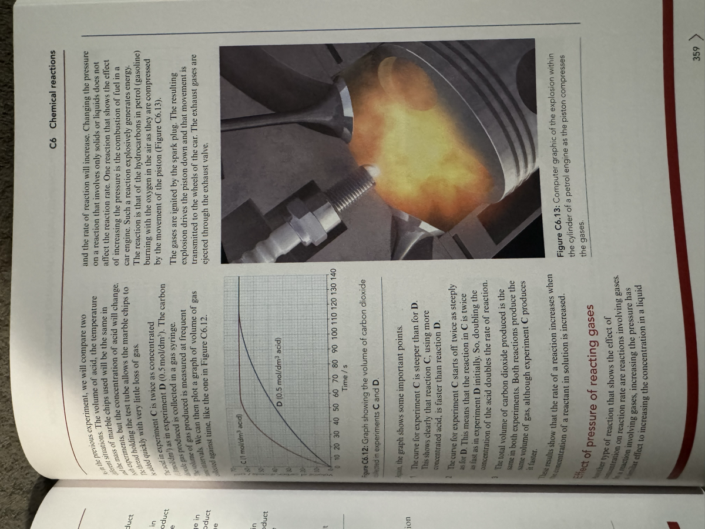
For reactions involving gases, increasing the pressure has the same effect as increasing the concentration:
Example: The combustion of fuel inside a car engine cylinder. The piston compresses the fuel-air mixture before the spark plug ignites it, making the explosion more powerful and efficient.
Increasing the temperature always increases the rate of a reaction. This is one of the most important factors.
Classic experiment: Sodium thiosulfate + hydrochloric acid (disappearing cross)
Key points from the experiment:
Why does temperature increase rate? Two reasons (explained by collision theory in section 2.8):
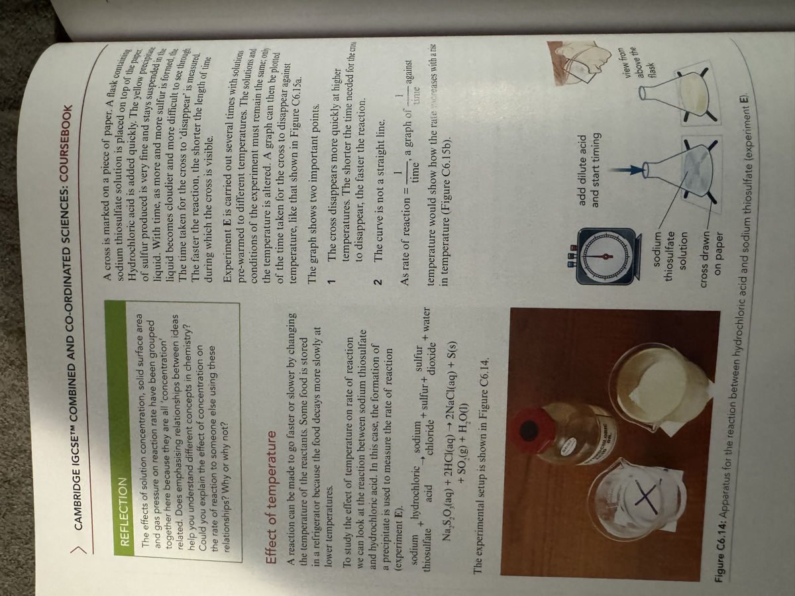
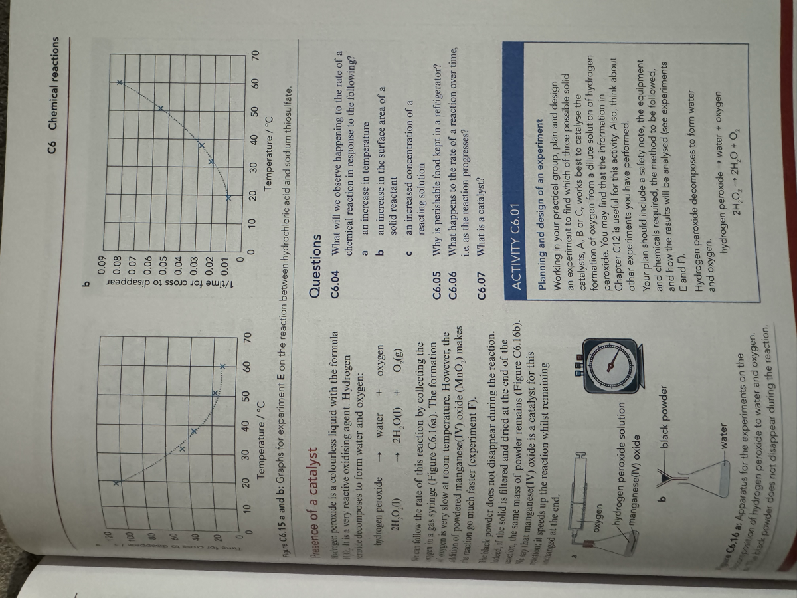
Catalyst: A substance that increases the rate of a chemical reaction without being chemically changed itself at the end of the reaction. A catalyst can be recovered and reused.
Classic experiment: Decomposition of hydrogen peroxide
Important industrial catalysts:
How catalysts work is explained through collision theory and activation energy in the sections below.
Collision theory: A theory that states that a chemical reaction can only occur when the reacting particles collide with each other with sufficient energy.
Not every collision leads to a reaction. The colliding particles must have at least a minimum amount of energy, called the activation energy (Eₐ), for the collision to be "successful."
Collision theory explains all five factors:
| Factor | Effect on Collisions | Why Rate Increases |
|---|---|---|
| Increased surface area | More surface exposed to reactant particles | More collisions per second at the surface |
| Increased concentration | More particles in the same volume | More frequent collisions |
| Increased temperature | Particles move faster | (1) More frequent collisions, AND (2) more particles have energy ≥ Eₐ |
| Increased pressure (gases) | Particles closer together | More frequent collisions |
| Catalyst added | Provides an alternative pathway with lower Eₐ | More collisions have energy ≥ the new, lower Eₐ |
Key exam point: Temperature has a double effect — it increases both the frequency of collisions AND the proportion of particles with enough energy to react. This is why temperature is often the most significant factor.
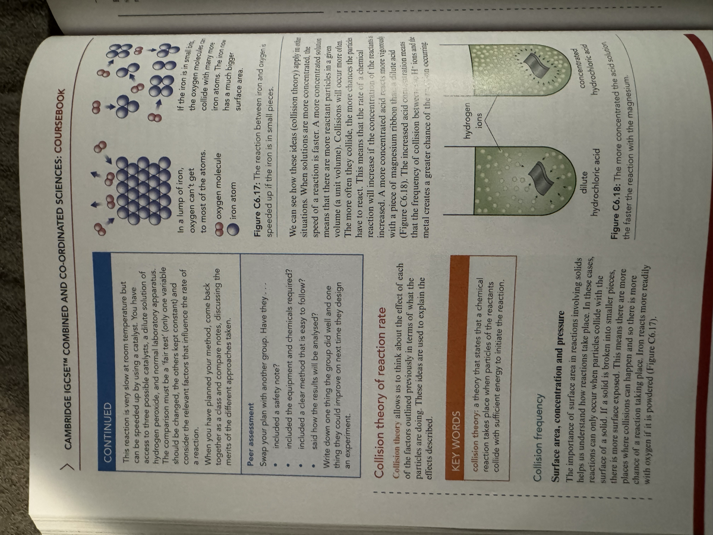
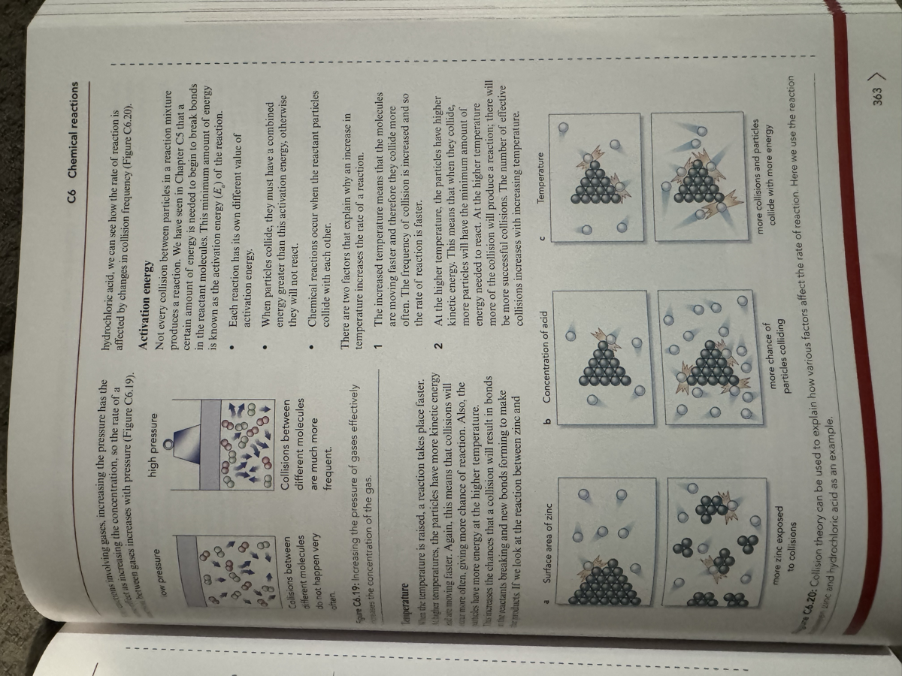
Activation energy (Eₐ): The minimum energy that colliding particles must possess for a reaction to occur.
Each reaction has its own unique activation energy value. Even exothermic reactions (that release energy overall) need activation energy to get started — this is why you need a match to light a fire.
The mountain analogy: Think of activation energy as a mountain pass. To get from one valley (reactants) to another valley (products), you must climb over the pass. The height of the pass is the activation energy. A catalyst is like finding a lower pass through the mountains.
Energy profile diagrams:
For an exothermic reaction (without catalyst):
For the same reaction with a catalyst:
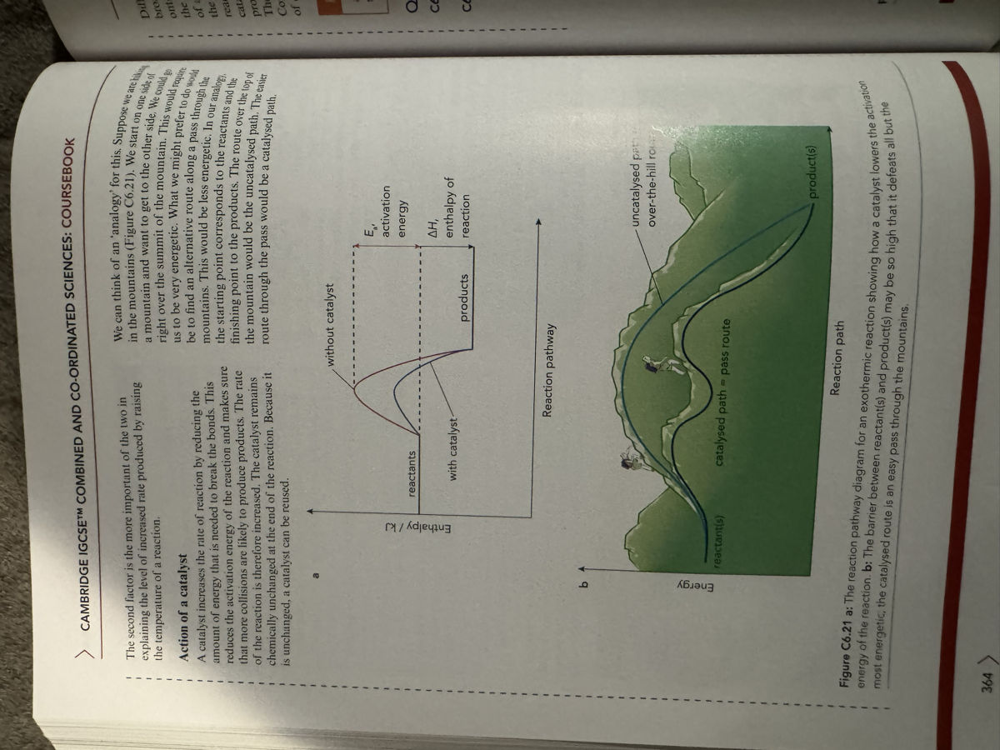
A catalyst lowers the activation energy by providing an alternative reaction pathway. Because the activation energy barrier is lower, more particles in the mixture have enough energy to react when they collide.
Key points about catalysts:
Industrial catalysts often work by adsorption: Reactant molecules attach to the catalyst surface, which weakens their bonds and brings them into the correct orientation to react. The Haber process uses iron, and the Contact process uses vanadium(V) oxide.
Two common types of rate experiments and their graphs:
Type 1: Mass loss over time (e.g., marble + acid, measuring on a balance)
Type 2: Volume of gas collected over time (e.g., using a gas syringe)
Reading initial rate from a graph:
Comparing experiments on the same graph:
Combustion: A chemical reaction in which a substance reacts with oxygen, and the reaction is exothermic (gives out heat).
Combustion reactions are of huge industrial importance — they power engines, heat homes, and generate electricity.
Example — Combustion of methane (natural gas):
Example — Combustion of copper:
Reduction of copper(II) oxide with hydrogen:
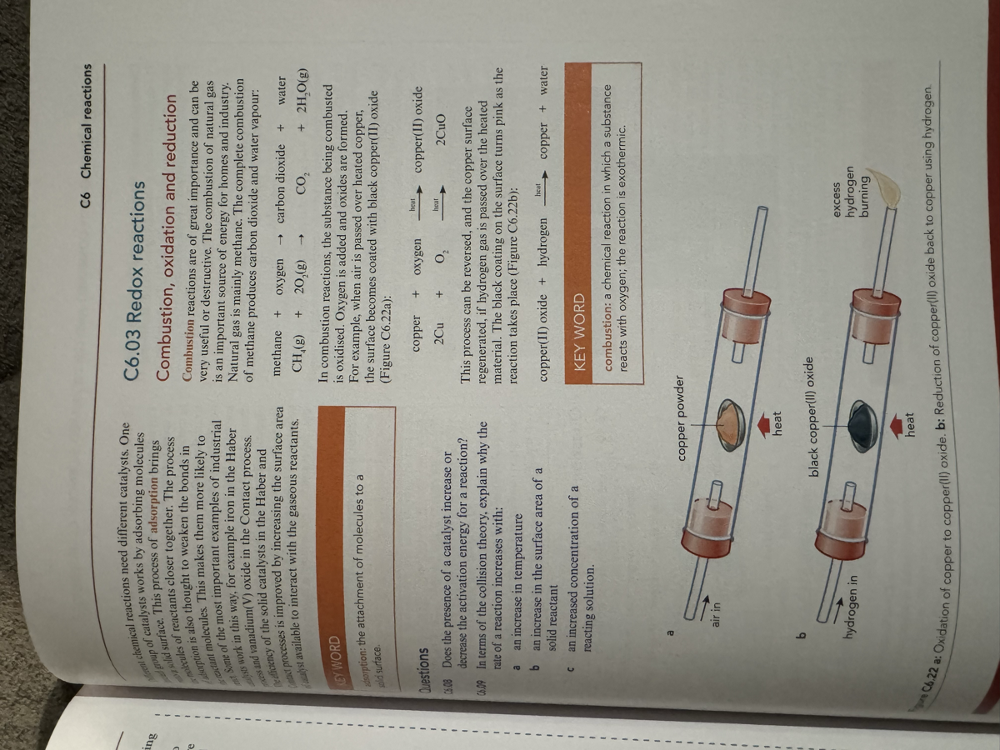
Oxidation: The gain of oxygen by an element or compound during a chemical reaction.
Reduction: The loss of oxygen from a compound during a chemical reaction.
Example — Reduction of copper(II) oxide by hydrogen:
These two processes always happen simultaneously — you cannot have oxidation without reduction. This is why we call them redox reactions.
Example — Zinc oxide reduced by carbon:
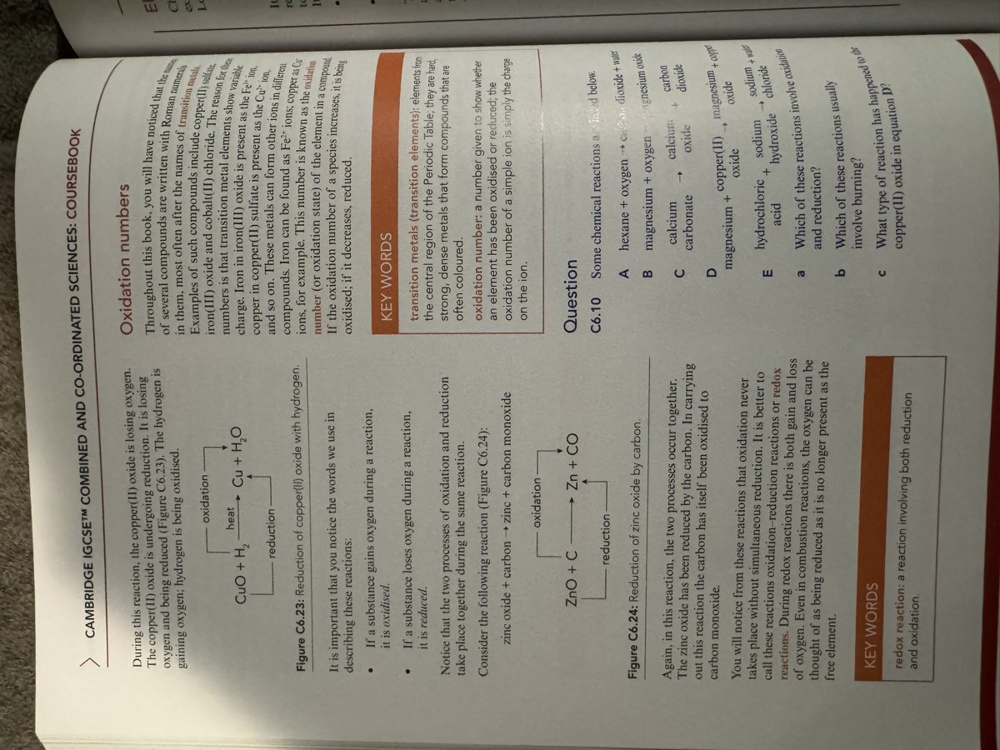
Transition metals can form ions with different charges. We use Roman numerals in compound names to show the oxidation state:
| Symbol | Name | Oxidation Number |
|---|---|---|
| Fe²⁺ | Iron(II) | +2 |
| Fe³⁺ | Iron(III) | +3 |
| Cu⁺ | Copper(I) | +1 |
| Cu²⁺ | Copper(II) | +2 |
Rules for identifying oxidation and reduction using oxidation numbers:
Example: In CuO + H₂ → Cu + H₂O
The most fundamental definition of oxidation and reduction is in terms of electron transfer:
Oxidation: The loss of electrons by an atom, ion, or molecule.
Reduction: The gain of electrons by an atom, ion, or molecule.
Memory aid — OIL RIG:
Example — Zinc displacing copper from copper(II) sulfate:
Full equation: Zn(s) + CuSO₄(aq) → ZnSO₄(aq) + Cu(s)
Ionic equation: Zn(s) + Cu²⁺(aq) → Zn²⁺(aq) + Cu(s)
Half-equations:
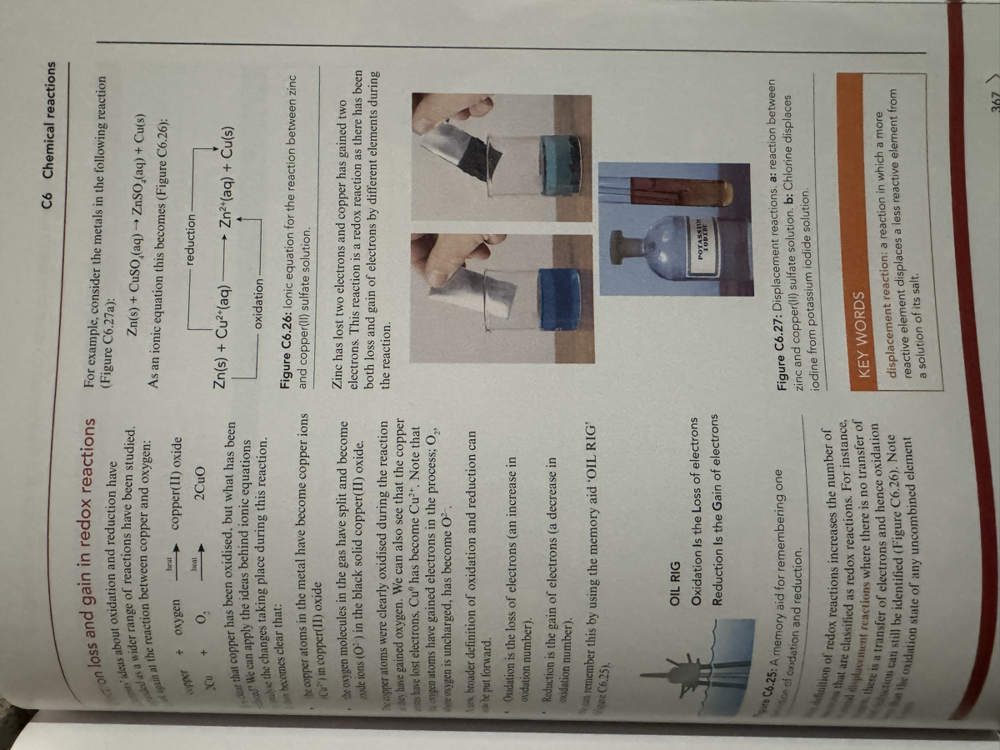
Displacement reaction: A reaction in which a more reactive element displaces (pushes out) a less reactive element from a solution of its salt.
Example — Chlorine displacing iodide ions:
Cl₂(aq) + 2I⁻(aq) → I₂(aq) + 2Cl⁻(aq)
The iodine atoms have lost electrons (oxidised), and the chlorine atoms have gained electrons (reduced). This shows the brown colour of iodine forming, confirming the reaction.
Displacement reactions are always redox reactions because one species is oxidised while the other is reduced.
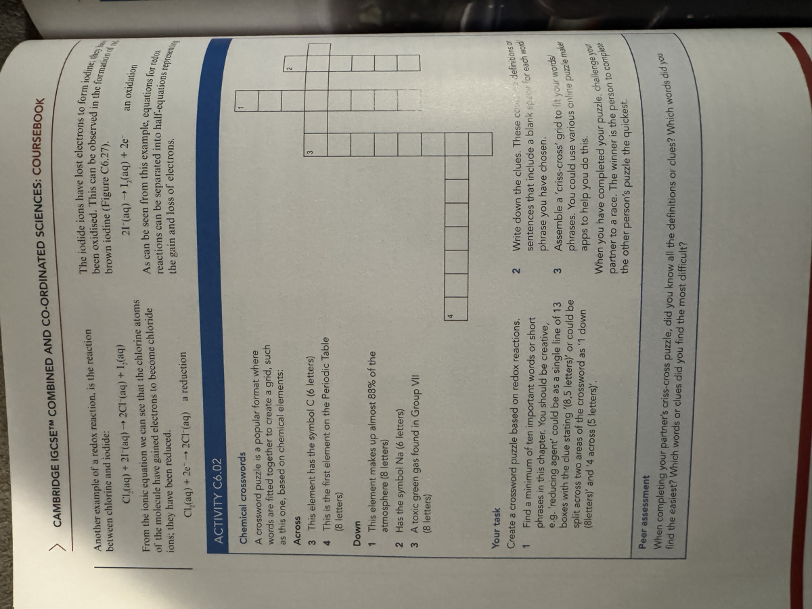
| Term | Definition |
|---|---|
| Physical change | A change in the physical properties or state of a substance that does not involve the formation of a new substance; usually easy to reverse |
| Chemical change | A change in which a new substance is formed; usually difficult to reverse |
| Reaction rate | A measure of how fast a reaction takes place |
| Catalyst | A substance that increases the rate of a chemical reaction but remains chemically unchanged at the end |
| Collision theory | The theory that reactions only occur when particles collide with sufficient energy (at least the activation energy) |
| Activation energy (Eₐ) | The minimum energy that colliding particles must have for a successful reaction to occur |
| Combustion | A chemical reaction in which a substance reacts with oxygen; the reaction is exothermic |
| Oxidation (oxygen) | The gain of oxygen by an element or compound |
| Reduction (oxygen) | The loss of oxygen from a compound |
| Oxidation (electrons) | The loss of electrons by an atom, ion, or molecule |
| Reduction (electrons) | The gain of electrons by an atom, ion, or molecule |
| Redox reaction | A reaction involving simultaneous oxidation and reduction |
| Displacement reaction | A reaction in which a more reactive element displaces a less reactive element from a solution of its compound |
| OIL RIG | Oxidation Is Loss, Reduction Is Gain (of electrons) |
| Oxidation number | The charge (or effective charge) on an element in a compound; shown by Roman numerals for transition metals |
Key equations you must be able to write and balance for the exam:
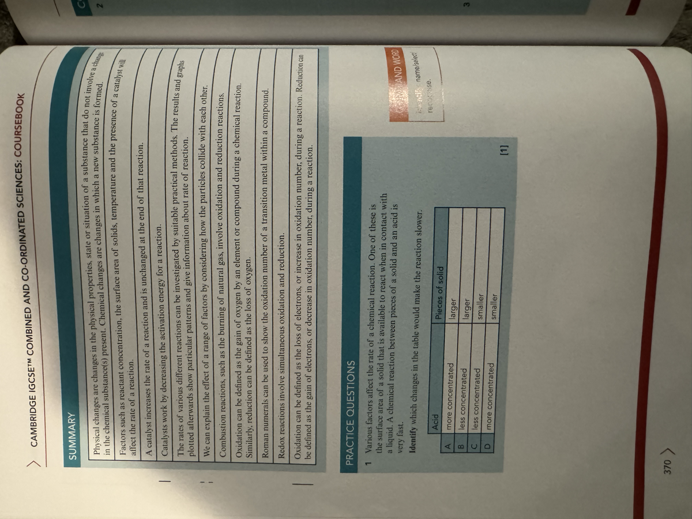
State whether the following changes are physical or chemical: (a) melting of ice, (b) burning of magnesium, (c) evaporation of ethanol, (d) dissolving of sugar in water.
Answer: (a) Melting of ice is a physical change — it is a change of state (solid to liquid) with no new substance formed, and it is easily reversed by cooling. (b) Burning of magnesium is a chemical change — magnesium reacts with oxygen to form magnesium oxide (a new substance), light and heat are released, and it cannot be easily reversed. (c) Evaporation of ethanol is a physical change — ethanol changes from liquid to gas but remains the same substance. (d) Dissolving sugar in water is a physical change — the sugar molecules are dispersed but not chemically altered, and the sugar can be recovered by evaporation.
State whether the following changes are physical or chemical, and for each one state whether the change is exothermic or endothermic: (a) condensation of steam to water, (b) burning of magnesium, (c) evaporation of a volatile liquid, (d) burning of concentrated sulfuric acid to water.
Answer: (a) Condensation of steam is a physical change and it is exothermic — energy is released as gas particles slow down and form the liquid state. (b) Burning of magnesium is a chemical change and it is exothermic — it releases a large amount of heat and light energy. (c) Evaporation of a volatile liquid is a physical change and it is endothermic — energy is absorbed from the surroundings to allow particles to escape from the liquid surface. (d) Adding concentrated sulfuric acid to water is a physical change and it is exothermic — the process releases significant heat energy.
What is the most important thing that shows us that a chemical reaction has taken place?
Answer: The most important indicator that a chemical reaction has taken place is the formation of one or more new substances with different chemical properties from the starting materials. Observable signs include colour change, gas production (bubbles), formation of a precipitate, temperature change, or emission of light, but the definitive evidence is that the products are chemically different from the reactants.
Hydrogen peroxide is a colourless liquid with the formula H₂O₂. It is a very reactive oxidising agent. Hydrogen peroxide decomposes to form water and oxygen. What will we observe happening to the rate of a chemical reaction in response to the following: (a) an increase in temperature, (b) an increase in the surface area of a solid reactant, (c) an increased concentration of a reacting solution?
Answer: (a) An increase in temperature will increase the rate of reaction. The particles will move faster, leading to more frequent collisions. Additionally, a greater proportion of particles will have energy equal to or greater than the activation energy, making more collisions successful. (b) An increase in surface area will increase the rate. More of the solid surface is exposed to the other reactant, so there are more collisions per second between reactant particles. (c) An increased concentration will increase the rate. There are more reactant particles in the same volume of solution, leading to more frequent collisions and therefore a faster reaction.
Why is food stored in a refrigerator?
Answer: Food is stored in a refrigerator because the lower temperature slows down the rate of chemical reactions that cause food to decay and spoil. At lower temperatures, the particles in the food and in any bacteria present have less kinetic energy, move more slowly, and collide less frequently. Fewer particles have enough energy to exceed the activation energy for the decomposition reactions. This means the food stays fresh for longer.
What happens to the rate of a reaction over time, i.e., as the reaction progresses?
Answer: The rate of a reaction decreases as the reaction progresses. This is because the reactants are being used up, so their concentration decreases over time. With fewer reactant particles present, there are fewer collisions per second, and the reaction slows down. Eventually, when one or more reactants are completely used up, the reaction stops entirely. This is shown on a graph by the curve becoming less steep and eventually levelling off (becoming horizontal).
What is a catalyst?
Answer: A catalyst is a substance that increases the rate of a chemical reaction without being chemically changed or used up at the end of the reaction. It works by providing an alternative reaction pathway that has a lower activation energy. This means that a greater proportion of the colliding particles have enough energy to react successfully, so the reaction occurs faster. The catalyst can be recovered and reused because it is not consumed.
Does the presence of a catalyst increase or decrease the activation energy for a reaction?
Answer: A catalyst decreases the activation energy for a reaction. It provides an alternative reaction pathway with a lower energy barrier. This means more particles in the reaction mixture have sufficient energy to overcome the activation energy barrier when they collide, leading to a greater proportion of successful collisions and a faster rate of reaction.
In terms of the collision theory, explain why the rate of a reaction increases with: (a) an increase in temperature, (b) an increase in the surface area of a solid reactant, (c) an increased concentration of a reacting solution.
Answer: (a) When temperature increases, the kinetic energy of the particles increases. This has two effects: the particles move faster so they collide more frequently, AND a greater proportion of particles have kinetic energy equal to or exceeding the activation energy. Both effects mean more successful collisions per second, so the rate increases. (b) When the surface area of a solid increases (e.g., by grinding it into smaller pieces), more of the solid surface is exposed to the other reactant. This increases the number of collisions per second between reactant particles and the solid surface, so the rate increases. (c) When concentration increases, there are more reactant particles in the same volume. This means the particles are closer together and collide more frequently. More collisions per second means more successful collisions per second, so the rate increases.
Some chemical reactions and their equations are listed here. For each reaction, identify which substance is oxidised and which is reduced:
Answer: A: Hexane is oxidised (gains oxygen to form CO₂ and H₂O). Oxygen is the oxidising agent — it is not meaningfully "reduced" here, but the oxygen is incorporated into the products. B: Magnesium is oxidised (gains oxygen to form MgO). Oxygen is reduced. C: Calcium is oxidised (gains oxygen to form calcium oxide). Copper(II) oxide is reduced (copper loses oxygen to become free copper metal). D: Magnesium is oxidised (gains oxygen to form magnesium oxide). Copper(II) oxide is reduced (copper loses oxygen to become copper metal). E: This is a neutralisation reaction, not a redox reaction. No species is oxidised or reduced — there is no transfer of oxygen or electrons between elements.
The equations for four different chemical reactions are listed here:
Identify the reaction in which the underlined substance is: (a) oxidised, (b) reduced.
Answer: (a) In reaction 2, carbon monoxide (CO) is oxidised — it gains oxygen to form carbon dioxide (CO₂). In reaction 3, methane (CH₄) is oxidised — the carbon gains oxygen to form CO₂ and the hydrogen gains oxygen to form H₂O. (b) In reaction 2, iron(III) oxide (Fe₂O₃) is reduced — the iron loses oxygen to form iron metal (Fe). In reaction 1, this is a thermal decomposition where the compound loses CO₂.
The equations for six different chemical reactions are listed here:
Use these reactions to answer the questions that follow. Each alternative may be used once, more than once, or not at all. State which reaction: (a) shows a metal being oxidised, (b) shows a substance being both reduced and oxidised, (c) shows a non-metal being oxidised, (d) shows a non-metal being reduced.
Answer: (a) Reaction D shows a metal being oxidised — magnesium gains oxygen to form magnesium oxide. (b) Reaction A shows both oxidation and reduction — calcium oxide is reduced (loses oxygen) while carbon is oxidised (gains oxygen). (c) Reaction A shows a non-metal (carbon) being oxidised — carbon gains oxygen to become CO. (d) Reaction B shows a non-metal being reduced — chlorine gains electrons from bromide ions (or equivalently, in terms of oxygen definitions, the halogen displacement means chlorine is the oxidising agent being reduced).
The rate of the reaction between lumps of calcium carbonate and dilute hydrochloric acid was investigated by collecting the gas produced. The results are given in the table:
| Time/s | 0 | 10 | 30 | 40 | 70 | 90 | 120 | 150 |
|---|---|---|---|---|---|---|---|---|
| Volume of CO₂/cm³ | 0 | 50 | 80 | 90 | 120 | 130 | 140 | 150 |
(a) The rate for the first 30 seconds is 40/30 = 1.33 cm³/s. Calculate the rate for the second 30 seconds. (b) Suggest why the volumes at 120 and 150 seconds are the same. (c) Suggest an alternative piece of apparatus that could be used to measure the changes. (d) Give the changes that could be made to the conditions that would speed up the reaction.
Answer: (a) In the second 30 seconds (from 30s to 60s), the volume changes from 80 cm³ to approximately 110 cm³ (interpolating). The rate = (110 - 80) / 30 = 1.0 cm³/s. This is slower than the initial rate because the reactant concentration has decreased. (b) The volumes at 120 and 150 seconds are the same because the reaction has stopped — one of the reactants (either the calcium carbonate or the hydrochloric acid) has been completely used up, so no more CO₂ is produced. (c) Instead of a gas syringe, a measuring cylinder filled with water and inverted in a water trough could be used (water displacement method). Alternatively, the reaction flask could be placed on a balance to measure the mass loss as CO₂ escapes. (d) The reaction could be sped up by: using smaller pieces of calcium carbonate (powder instead of lumps) to increase surface area; using more concentrated hydrochloric acid; increasing the temperature; adding a catalyst.
The reaction between sodium thiosulfate and hydrochloric acid was investigated. The experiment was repeated at different temperatures. The results are given in the table:
| Temperature/°C | 20 | 30 | 40 | 50 |
|---|---|---|---|---|
| Time to obscure cross/s | 47 | 23 | 12 | 6 |
| 1/time | 0.021 | 0.043 | 0.083 | 0.167 |
(a) Use the information in the table to describe how the reaction rate varies with temperature. (b) Use ideas about reacting particles to explain why reaction rate changes with temperature.
Answer: (a) The reaction rate increases as temperature increases. The time taken for the cross to disappear decreases from 47 seconds at 20°C to just 6 seconds at 50°C. The rate (represented by 1/time) increases steadily — it roughly doubles for every 10°C rise in temperature. This means that increasing the temperature has a dramatic effect on the speed of the reaction. (b) At higher temperatures, the reacting particles (sodium thiosulfate ions and hydrochloric acid molecules) have greater kinetic energy. This means they move faster and collide more frequently with each other. More importantly, at higher temperatures a significantly greater proportion of the particles have kinetic energy that equals or exceeds the activation energy (Eₐ) of the reaction. This means a larger fraction of collisions are "successful" — they have enough energy to break the bonds in the reactants and form new products. Both effects combined cause the reaction rate to increase substantially with temperature.
Zinc reacts with dilute sulfuric acid to form hydrogen: Zn + H₂SO₄ → ZnSO₄ + H₂. If lumps of zinc are used, the reaction is quite slow, but small pieces of zinc react more rapidly. (a) State why smaller pieces of zinc react more rapidly. (b) If the acid is heated, the reaction takes place more rapidly. Explain why the reaction speeds up when the acid is heated. Use ideas about collisions and energy.
Answer: (a) Smaller pieces of zinc have a larger total surface area exposed to the acid compared to the same mass of large lumps. With more surface available, more zinc atoms are in contact with the sulfuric acid molecules at any one time. This increases the number of collisions per second between zinc atoms on the surface and acid particles, so the reaction rate increases. (b) When the acid is heated, the temperature increases. This has two effects on the reacting particles. First, the particles gain kinetic energy and move faster, so they collide more frequently — this alone would increase the rate. Second, and more importantly, at the higher temperature a greater proportion of the acid particles have kinetic energy equal to or exceeding the activation energy. This means a higher percentage of collisions are energetic enough to break bonds and cause a successful reaction. Both effects mean more successful collisions per second, so the rate of reaction increases.
What type of reaction has happened to the underlined substance in the following equation: CuO + H₂ → Cu + H₂O? Explain your answer using ideas about oxygen transfer and electron transfer.
Answer: Copper(II) oxide (CuO) has been reduced. In terms of oxygen transfer: copper has lost oxygen (CuO → Cu), which is the definition of reduction. Simultaneously, hydrogen has been oxidised (H₂ → H₂O, gaining oxygen). In terms of electron transfer: the copper ion (Cu²⁺) in CuO has gained two electrons to become copper metal (Cu⁰) — gaining electrons is reduction (using OIL RIG: Reduction Is Gain). The hydrogen atoms have lost electrons — each H goes from 0 to +1 in H₂O, meaning they are oxidised. This is a redox reaction because oxidation and reduction occur simultaneously.
Identify which of the following reactions involve both oxidation and reduction (i.e., are redox reactions): (a) NaOH + HCl → NaCl + H₂O, (b) Mg + CuSO₄ → MgSO₄ + Cu, (c) CaCO₃ → CaO + CO₂.
Answer: (a) NaOH + HCl → NaCl + H₂O — this is NOT a redox reaction. It is a neutralisation reaction. No element changes its oxidation state. (b) Mg + CuSO₄ → MgSO₄ + Cu — this IS a redox reaction. Magnesium is oxidised (Mg → Mg²⁺, losing 2 electrons). Copper is reduced (Cu²⁺ → Cu, gaining 2 electrons). Magnesium displaces copper because it is more reactive. (c) CaCO₃ → CaO + CO₂ — this is NOT a redox reaction. It is thermal decomposition. The oxidation states of calcium (+2), carbon (+4), and oxygen (-2) do not change.
Write the half-equations for the reaction: Zn(s) + Cu²⁺(aq) → Zn²⁺(aq) + Cu(s).
Answer: Oxidation half-equation: Zn(s) → Zn²⁺(aq) + 2e⁻ (zinc loses two electrons — oxidised). Reduction half-equation: Cu²⁺(aq) + 2e⁻ → Cu(s) (copper ions gain two electrons — reduced). The two electrons lost by zinc are the same two electrons gained by copper, showing the simultaneous nature of redox.
7 things to remember for C6 Chemical Reactions:
Quick self-test: Can you draw an energy profile diagram for an exothermic reaction, add a catalyst line, label Eₐ (with and without catalyst) and ΔH? Can you write half-equations for Zn + Cu²⁺ → Zn²⁺ + Cu?
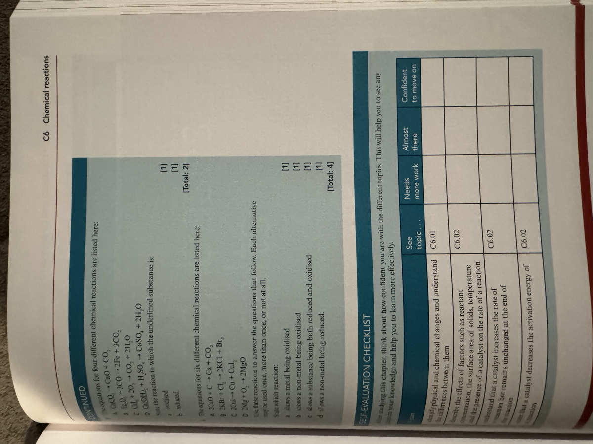